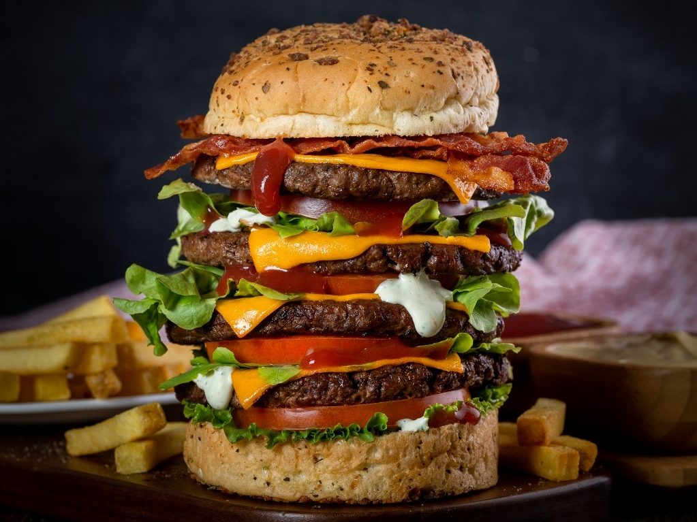

¡Celebramos nuestro décimo aniversario!
El restaurante Burger's House acaba de celebrar su décimo aniversario en una gran fiesta que reunió a amigos, clientes y personalidades locales. Desde su apertura hace una década, Burguer's House ha sido conocido por sus hamburguesas gourmet y su ambiente acogedor, lo que lo ha convertido en un lugar popular para disfrutar de una buena comida y una experiencia gastronómica única.

La fiesta de aniversario comenzó temprano en la tarde y se extendió
hasta la noche, con música en vivo, comida y bebida gratis para todos
los asistentes. El personal del restaurante se vistió con camisetas
especiales para la ocasión y atendió a los invitados con su
característica amabilidad y atención al detalle. Entre los asistentes,
se encontraban los clientes habituales del restaurante, así como
algunas personalidades locales, incluyendo a políticos, celebridades y
periodistas de los medios de comunicación. Todos ellos disfrutaron de
las deliciosas hamburguesas y los cócteles exclusivos que el equipo de
Burguer's House preparó para la ocasión.
Además de la comida y la bebida, se organizaron diversas actividades
para entretener a los asistentes, como concursos de trivia, juegos de
mesa y sorteos de premios. La fiesta culminó con un espectáculo de
fuegos artificiales que iluminó el cielo nocturno, mientras los
invitados brindaban por el éxito del restaurante y por muchos años más
de deliciosas hamburguesas.